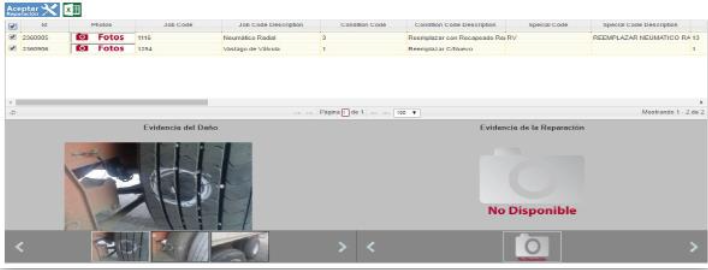
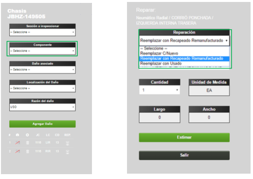
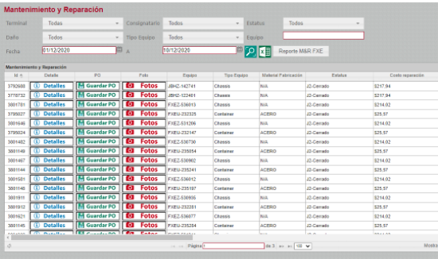

SIMEX M&R — Container Maintenance & SAP Integration
Connecting Ferromex's container Maintenance & Repair system with SAP, so every approved repair generates its sales order automatically, draws its materials from inventory and ties its cost to the revenue it produces.
From damage report to sales order, automatically
When a container is damaged during rail transport, Ferromex offers its owner a repair service. Terminal staff inspect the unit, record the damage in SIMEX M&R and send the customer a quotation with the materials and services required.
The project adapted SAP and the existing M&R system, which serves 6 locations nationwide, to automate that process end to end:
- Materials under inventory control: repair materials and their costs are tracked in SAP.
- Automatic sales orders: the sales order for each repair is generated and recorded from the M&R system.
- Reporting in both systems: reports that match repair costs against repair revenue.

The challenge
The technical complexity of integrating SAP with a web application, and of testing it: two systems and two teams behind a single business process.
The approach
One analysis document for both systems, two development tracks running in parallel, then dedicated integration and end-to-end testing phases before a controlled release.
My role
Project Manager, responsible for planning, budget and coordination of the SAP and M&R teams. A software development background helped me bridge both technical sides.
One repair, two systems, five steps
Analysis followed a repair from the moment the damage is spotted to the moment its cost and its revenue meet in SAP.
Inspection
- Visual inspection of the container
- Damage captured on site
- Photo evidence
Quotation
- Materials and services
- Rates by customer and location
- Sent to the customer by email
Approval
- Online review of quotation and photos
- Full or partial acceptance
Work order
- Work order created in SIMEX M&R
- Sales order generated in SAP
Materials & cost
- Materials issued from inventory
- Cost linked to repair revenue
- Reports for Finance
SIMEX M&R enhancements
- Rate management by customer and location
- Quotation generation and delivery
- Sales order generation towards SAP
- Reports for Administration
SAP enhancements
- Warehouses created and configured in MM
- Materials created and configured
- Reports for Finance
Interfaces
- Web service to query material stock by location
- Web service to issue materials against a work order
- Web service to generate the sales order and work order
How the project was delivered
A hybrid lifecycle with one particularity: two development tracks, one per system, converging in a dedicated integration phase.
Initial planning produced a high-level, phased development roadmap together with time, scope and cost estimates, which became the baseline for the rest of the project.
The analysis covered both systems. SAP had to be modified so that repair materials could be inventoried from the moment Procurement buys them, and so that sales orders could be generated automatically from the M&R system. SIMEX M&R had to be modified to connect to SAP through web services and create the sales orders tied to each repair.
The business process was modeled end to end: inspection, quotation, customer acceptance (full or partial), work order, sales order and materials issue. Everything was consolidated into a single analysis document containing, for each system:
- Screens for every new or modified function.
- Web service specifications for each interface between SIMEX M&R and SAP.

This project had a particular shape: two developments running in parallel, one for the SAP scope and one for the existing M&R system, followed by an integration phase, an end-to-end testing phase and finally a release phase.
The analysis document was broken down into user stories in Jira, with a development and testing schedule. The teams delivered in sprints, and each sprint closed with user acceptance testing, so issues surfaced early rather than at the end.
At the end of development, the team ran internal testing against a structured test matrix.
| ID | Module | Test scenario | Result |
|---|---|---|---|
| TC-001 | Rates | Apply the rate configured for the customer and location | Pass |
| TC-002 | Quotation | Send the quotation with damage photos to the customer by email | Pass |
| TC-003 | Approval | Partial acceptance creates a work order only for the accepted items | Pass |
| TC-004 | SAP interface | Query material stock by location | Pass |
| TC-005 | SAP interface | Accepted quotation generates a sales order in SAP | Pass |
| TC-006 | SAP interface | Materials issued against the work order are deducted from inventory | Pass |
End-to-end user testing followed, covering the full flow across both systems. Results were documented in a test report submitted to Operations for sign-off, and the requested adjustments were applied before release.
The rollout was designed to protect operations at every step:
- Full user training on the new system, with visits to the terminals.
- Controlled release on a planned cutover date.
- Parallel run: both versions of the system stayed live during the transition.
- Go-live support: a dedicated team at headquarters and a 24/7 chat channel for Operations, from cutover through the following week.

Post-implementation was planned around a pre-approved bank of hours, so adjustments requested after release did not require a new procurement cycle. Remote and on-site training sessions with users continued during this phase to support correct use of the system.
The toolkit behind the delivery
Each stage of the project relied on its own set of proven techniques.
- Process modelingThe repair process end to end, from inspection to sales order.
- UX/UI designScreens defined for every new or modified function.
- Interface specificationsEach web service between SIMEX M&R and SAP specified before development.
- User stories in JiraDerived from the analysis document to keep scope traceable.
- Parallel sprintsOne track per system, each on its own schedule.
- Sprint-end UATUsers accepted every increment, so issues surfaced early.
- Functional testingInternal test cycle at the end of development.
- Test matrixStructured coverage of every module and interface.
- End-to-end UAT sign-offTest report submitted to Operations for approval.
- Cutover planningControlled release on a set date.
- Parallel runBoth versions of the system kept live during adoption.
- Hypercare24/7 support channel, a pre-approved hours bank and follow-up training.
Technology
Core team: 1 analyst · 2 .NET front-end developers · 1 SQL Server back-end developer · 1 SAP MM functional consultant · 1 ABAP developer · 1 architect · 1 development lead
Connecting SAP to your operations?
I lead IT and telecom projects from first workshop to go-live, with operations running the whole way through.